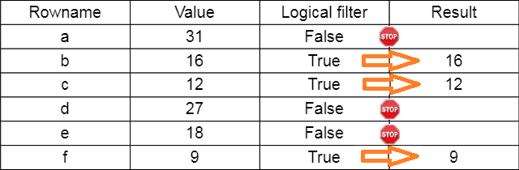
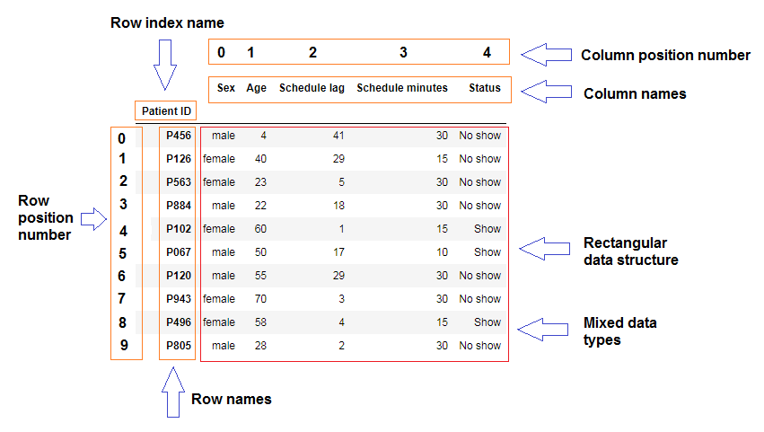

Richard Waterman
August 2026
# This will be the standard way of importing the pandas library and aliasing it to "pd"
import pandas as pd
# Create some data in place (later we will import from various sources).
# These are median house prices from various locations around Philadelphia.
house_data = pd.Series([66803, 104923, 114233, 114572, 112471, 99843, 74308, 147176, 199065, 130953],
index =['Collindale','Downingtown', 'Falls Town', 'Hatboro', 'Lansdale',
'Norwood', 'Sharon Hill', 'Springfield', 'Upper Darby', 'Yardley'])Collindale 66803
Downingtown 104923
Falls Town 114233
Hatboro 114572
Lansdale 112471
Norwood 99843
Sharon Hill 74308
Springfield 147176
Upper Darby 199065
Yardley 130953
dtype: int64array([ 66803, 104923, 114233, 114572, 112471, 99843, 74308, 147176,
199065, 130953])Index(['Collindale', 'Downingtown', 'Falls Town', 'Hatboro', 'Lansdale',
'Norwood', 'Sharon Hill', 'Springfield', 'Upper Darby', 'Yardley'],
dtype='object')C:\Users\water\AppData\Local\Temp\ipykernel_960\4251852872.py:1: FutureWarning: Series.__getitem__ treating keys as positions is deprecated. In a future version, integer keys will always be treated as labels (consistent with DataFrame behavior). To access a value by position, use `ser.iloc[pos]`
house_data[[0,7,3]] # Identify elements in positions 0, 7 and 3 (note the [[]] brackets).
Collindale 66803
Springfield 147176
Hatboro 114572
dtype: int64---------------------------------------------------------------------------
TypeError Traceback (most recent call last)
Cell In[6], line 2
1 list_a = list(range(10)) # Make a list
----> 2 list_a[[0,7,3]] # This does not work!
TypeError: list indices must be integers or slices, not listFalls Town 114233
Hatboro 114572
Lansdale 112471
dtype: int64np.int64(104923)Downingtown 104923
dtype: int64Downingtown 104923
Lansdale 112471
Upper Darby 199065
Falls Town 114233
dtype: int64

raw_data = pd.Series([31,16,12,27,28,9],
index =['a','b', 'c', 'd', 'e','f'])
logic_filter = [False, True, True, False, False, True]
print(raw_data[logic_filter])b 16
c 12
f 9
dtype: int64# A list containing Trues in positions, 0,3,7,8
logical_list = [True, False, False, True, False, False, False, True, True, False]
house_data[logical_list]Collindale 66803
Hatboro 114572
Springfield 147176
Upper Darby 199065
dtype: int64expensive = house_data > 110000 # A logical comparison returning another Series, but this time of logicals.
print(expensive)Collindale False
Downingtown False
Falls Town True
Hatboro True
Lansdale True
Norwood False
Sharon Hill False
Springfield True
Upper Darby True
Yardley True
dtype: boolpandas.core.series.SeriesFalls Town 114233
Hatboro 114572
Lansdale 112471
Springfield 147176
Upper Darby 199065
Yardley 130953
dtype: int64Downingtown 104923
Norwood 99843
dtype: int64np.float64(116434.7)113352.00.25 101113.00
0.50 113352.00
0.75 126857.75
dtype: float64Collindale 66803
Downingtown 104923
Falls Town 123456
Hatboro 114572
Lansdale 112471
Norwood 99843
Sharon Hill 74308
Springfield 147176
Upper Darby 199065
Yardley 130953
dtype: int64
C:\Users\water\AppData\Local\Temp\ipykernel_960\2138629545.py:1: FutureWarning: Series.__setitem__ treating keys as positions is deprecated. In a future version, integer keys will always be treated as labels (consistent with DataFrame behavior). To set a value by position, use `ser.iloc[pos] = value`
house_data[2] = 123456 # Overwrite a single element.Collindale 66803
Downingtown 104923
Falls Town 123456
Hatboro 114572
Lansdale 999999
Norwood 8888888
Sharon Hill 74308
Springfield 147176
Upper Darby 199065
Yardley 130953
dtype: int64house_data[house_data < 100000] = 0 # Overwrite using a logical filter to identify, and a repeated value to populate.
print(house_data)Collindale 0
Downingtown 104923
Falls Town 123456
Hatboro 114572
Lansdale 999999
Norwood 8888888
Sharon Hill 0
Springfield 147176
Upper Darby 199065
Yardley 130953
dtype: int64

#A dict structure containing the raw data and column names:
raw_data = {'Sex': ['male','female','female','male','female','male','male','female','female','male'],
'Age': [4,40,23,22,60,50,55,70,58,28],
'Schedule lag': [41,29,5,18,1,17,29,3,4,2],
'Schedule minutes':[30,15,30,30,15,10,30,30,15,30],
'Status': ['No show', 'No show', 'No show', 'No show', 'Show', 'Show', 'No show', 'No show', 'Show', 'No show']}patient_data = pd.DataFrame(data = raw_data) # pd.DataFrame() when passed the raw data will create the new data frame.
print(patient_data) Sex Age Schedule lag Schedule minutes Status
0 male 4 41 30 No show
1 female 40 29 15 No show
2 female 23 5 30 No show
3 male 22 18 30 No show
4 female 60 1 15 Show
5 male 50 17 10 Show
6 male 55 29 30 No show
7 female 70 3 30 No show
8 female 58 4 15 Show
9 male 28 2 30 No show(10, 5)Sex object
Age int64
Schedule lag int64
Schedule minutes int64
Status object
dtype: object## Get just the names of the columns in the data frame with the .columns attribute.
print( patient_data.columns) Index(['Sex', 'Age', 'Schedule lag', 'Schedule minutes', 'Status'], dtype='object')# Get the Age column by name as we would if the data structure were a dict.
print(patient_data['Age'])0 4
1 40
2 23
3 22
4 60
5 50
6 55
7 70
8 58
9 28
Name: Age, dtype: int640 4
1 40
2 23
3 22
4 60
5 50
6 55
7 70
8 58
9 28
Name: Age, dtype: int64RangeIndex(start=0, stop=10, step=1)patient_ids = ['P456', 'P126','P563', 'P884','P102', 'P067','P120', 'P943','P496', 'P805'] # Patient identifiers.
patient_data.index = patient_ids # Assign a new index.
patient_data.index.name = 'Patient ID' # Give the new index a name.
print(patient_data) # Check out the data frame. Sex Age Schedule lag Schedule minutes Status
Patient ID
P456 male 4 41 30 No show
P126 female 40 29 15 No show
P563 female 23 5 30 No show
P884 male 22 18 30 No show
P102 female 60 1 15 Show
P067 male 50 17 10 Show
P120 male 55 29 30 No show
P943 female 70 3 30 No show
P496 female 58 4 15 Show
P805 male 28 2 30 No show Sex Age Schedule lag Schedule minutes Status
Patient ID
P884 male 22 18 30 No show
P102 female 60 1 15 Show
P067 male 50 17 10 Show Sex Age Schedule lag Schedule minutes Status
Patient ID
P805 male 28 2 30 No show
P496 female 58 4 15 Show
P943 female 70 3 30 No show Sex Status
Patient ID
P456 male No show
P126 female No show
P563 female No show
P884 male No show
P102 female Show
P067 male Show
P120 male No show
P943 female No show
P496 female Show
P805 male No show Sex Age Schedule lag Schedule minutes Status
Patient ID
P120 male 55 29 30 No show
P805 male 28 2 30 No show Sex Status
Patient ID
P120 male No show
P805 male No showSex female
Age 40
Schedule lag 29
Schedule minutes 15
Status No show
Name: P126, dtype: object Sex Age Schedule lag Schedule minutes Status
Patient ID
P126 female 40 29 15 No show Sex Age Schedule lag Schedule minutes Status
Patient ID
P456 male 4 41 30 No show
P805 male 28 2 30 No show Schedule lag Schedule minutes
Patient ID
P126 29 15
P884 18 30
P067 17 10 Schedule minutes Status
Patient ID
P456 30 No show
P126 15 No showpatient_data.Sex == "female" # A series where the trues are for females and the falses for males.
print(patient_data.Sex == "female")Patient ID
P456 False
P126 True
P563 True
P884 False
P102 True
P067 False
P120 False
P943 True
P496 True
P805 False
Name: Sex, dtype: bool Sex Age Schedule lag Schedule minutes Status
Patient ID
P126 female 40 29 15 No show
P563 female 23 5 30 No show
P102 female 60 1 15 Show
P943 female 70 3 30 No show
P496 female 58 4 15 Show# A compound selection of females who showed up. The "&" here performs the logical "and".
# It works elementwise on the two boolean Series.
print(patient_data[(patient_data.Sex == "female") & (patient_data.Status == "Show")]) Sex Age Schedule lag Schedule minutes Status
Patient ID
P102 female 60 1 15 Show
P496 female 58 4 15 Show# Get the schedule lag for females who showed up.
print(patient_data[(patient_data.Sex == "female") & (patient_data.Status == "Show")].iloc[:, [2]]) Schedule lag
Patient ID
P102 1
P496 4print(patient_data.iloc[2,0]) # Sex of the third patient.
patient_data.iloc[2,0] = 'male' # Overwrite from female to male.
print(patient_data.iloc[2,0])female
male Sex Age Schedule lag Schedule minutes Status
Patient ID
P456 male 4 41 30 No show
P126 female 40 29 15 No show
P563 male 19 5 30 No show
P884 male 19 18 30 No show
P102 female 60 1 15 Show
P067 male 50 17 10 Show
P120 male 55 29 30 No show
P943 female 70 3 30 No show
P496 female 58 4 15 Show
P805 male 28 2 30 No show Sex Age Schedule lag Schedule minutes Status
Patient ID
P456 NA 99 41 30 No show
P126 female 40 29 15 No show
P563 male 19 5 30 No show
P884 NA 99 18 30 No show
P102 female 60 1 15 Show
P067 male 50 17 10 Show
P120 male 55 29 30 No show
P943 female 70 3 30 No show
P496 female 58 4 15 Show
P805 male 28 2 30 No show